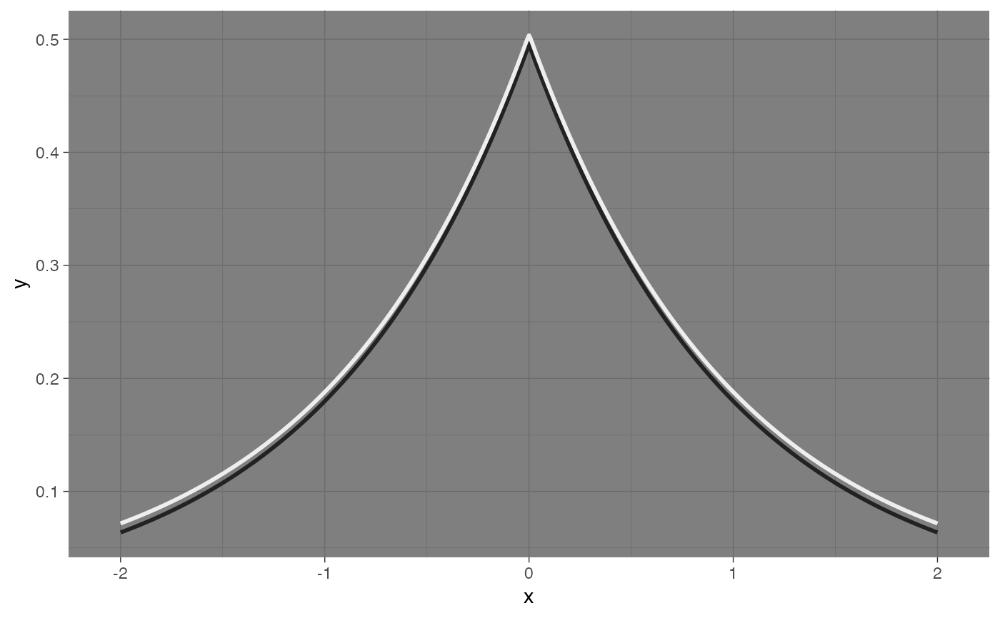
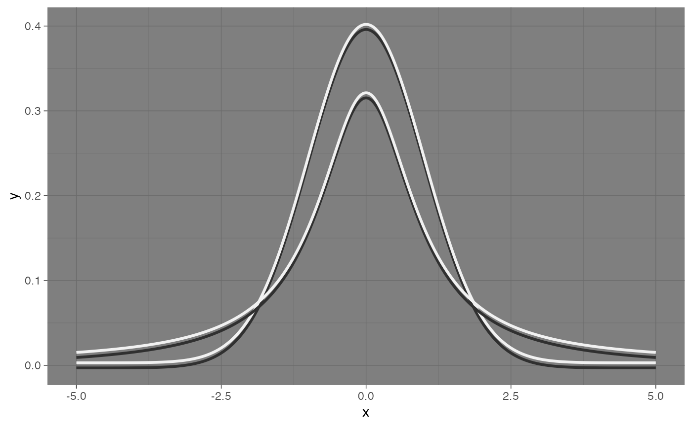

Draws a function (e.g., density or mathematical curve) using perceptually offset dual-stroke curved line segments.
A function to evaluate (e.g., dnorm, dt).
Range of x-values to evaluate over (numeric vector of length 2).
Number of segments to compute (default: 201).
Passed to underlying geom_curve_dual segments.
Top stroke color (typically light).
Bottom stroke color (typically dark). If NULL, will be auto-computed for contrast.
Background color used for contrast calculation (default: "#000000").
Either "apca", "wcag", or "auto".
Perpendicular offset between strokes.
Stroke width for the top line.
List of arguments passed to fun (for example, list(df = 1) for dt).
Use smooth dual-stroke curves (geom_path) instead of segmented curves (geom_curve_dual). Default is FALSE.
Additional arguments passed to geom_curve_dual().
A ggplot2 layer with curved segments.
library(ggplot2)
base <- ggplot() + xlim(-2.05,2.05)
base +
geom_curve_dual_function(
fun = function(x) 0.5 * exp(-abs(x)),
xlim = c(-2, 2),
color1 = "#EEEEEE",
color2 = "#222222",
offset = 0.004,
linewidth = 1,
smooth = TRUE
) +
theme_dark()

pair1 <- adjust_contrast_pair("#FFFFFF", background = "black", method = "APCA")
pair2 <- adjust_contrast_pair("#AAAAAA", background = "black", method = "APCA")
ggplot() +
geom_curve_dual_function(
fun = dnorm,
xlim = c(-5, 5),
color1 = pair1$light,
color2 = pair1$dark,
offset = 0.003,
linewidth = 1,
smooth = TRUE
) +
geom_curve_dual_function(
fun = dt,
args = list(df = 1),
xlim = c(-5, 5),
color1 = pair2$light,
color2 = pair2$dark,
offset = 0.003,
linewidth = 1,
smooth = TRUE
) +
theme_dark()
